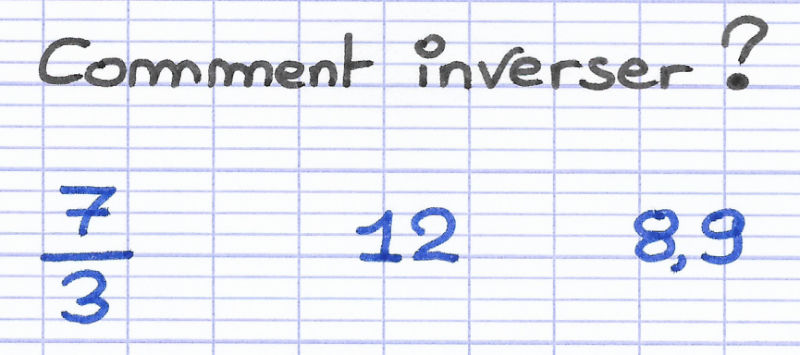

Modules d'apprentissage

Inverses
Module sur la notion mathématique d'inverse

Card title
This is a short card.

Card title
This is a longer card with supporting text below as a natural lead-in to additional content.

Card title
This is a longer card with supporting text below as a natural lead-in to additional content. This content is a little bit longer.